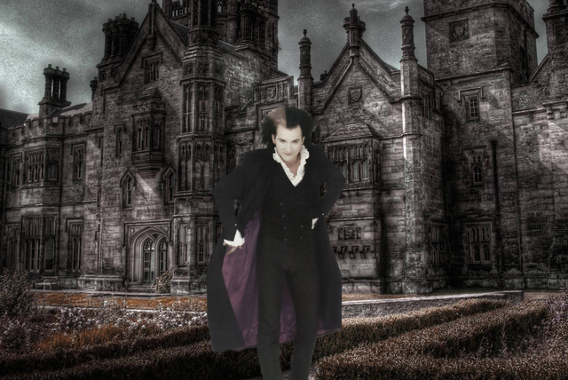
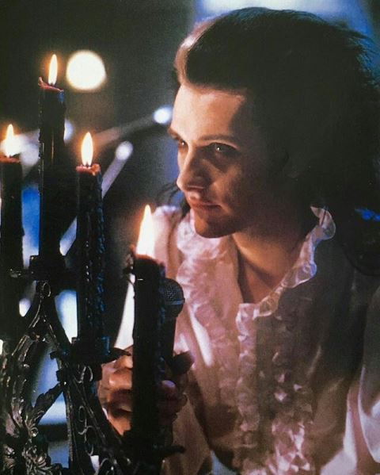
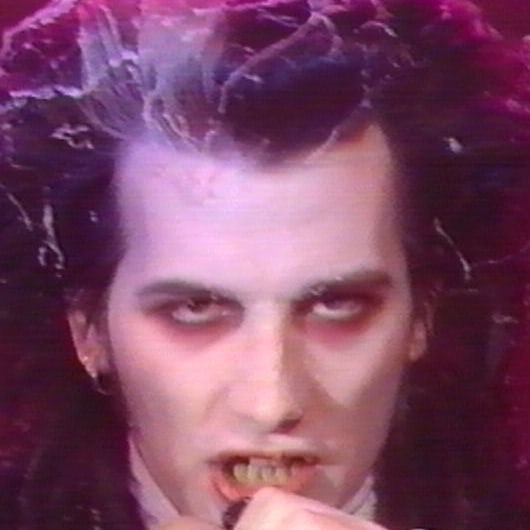

1
Lejant Alanı / Cindern Luaith O'Vanian, Bakanlık Karşıtı Hınzır!
« : 25 Mayıs, 2023 03:25:16 - Kurgusal Tarih: Ekim 1866 »
"Coimhéad fearg fhear na foighde!"
Cindern Luaith O'Vanian
Doğum Tarihi ve Doğum Yeri: 01.12.1828 – Dublin, İrlanda
Hogwarts Binası: Gryffindor
Cemiyet: Merlin Tılsım Kulübü
Meslek: Yasadışı Çete Lideri ve "Bakanlık Karşıtı"
Yetenek: -
Özet Geçmişi:
Cindern Luaith O'Vanian zengin bir İrlandalı ailede doğdu, ancak ailesinin servetiyle yaşamaktan hiçbir zaman mutlu olamamıştı... Serüven ile heyecanı arayan, huzursuz, meraklı bir usu vardı ve her zaman toplum tarafından kabul edilebilir olanın sınırlarını zorladığı; mirasyedi, savurgan, dağınık, kin tutucu, tutumsuz ve abartılı kişiliğiyle bilinen bir büyücü olarak çevresince tanındı. Uçarı ününe karşın, Cindern gençliğinde her zaman yeni bilgi ve güç arayan parlak bir büyücü olarak yetişmişti. Hogwarts mezuniyeti sonrasındaki yıllarını da babası gibi Büyücedünya'yı dolaşıp az bulunan ve tehlikeli büyülü eserleri arayarak, yasak büyüler ile iksirleri deneyerek geçirmişti. Yaşantısının üzüntüyle kaplanacak olan dönemleri de o zamanlara denk gelmiş; Cindern'in her zaman için kendini suçladığı büyülü bir kaza sonucunda, tüm ailesi gözlerinin önünde ölümden daha kötü bir yazgıyla Dünya'dan göçmüşlerdi. Yaşananların travması onu delirmenin eşiğine getirmiş; adamın tüm bilgisi ve varlığını yığımladığı, Dünya'dan elini-eteğini çekip gün geçtikçe daha da yansıtımcalaştığı, içe kapanıklığıyla geçecek yıllarının başlangıcına sürüklemişti. Boş odaları kullanılmamaktan toz kaplamış O'Vanian yurtluğunun bakımsız bahçesi ve kirli camları, bazı geceler Cindern'in çaldığı borulu org ve kimi zaman kahkahalarla güldüğü kimi zaman da ağlayıp yakaran sesinin yankılarıyla titremek dışında başka canlılık belirtisi taşımamaya başlamış; bu nedenle de ne çevresindeki boş kırsal üzerinde bulunan komşuları, ne iş arayan hizmetçiler ne de yolunu yitirmiş yolcular tarafından kapısı çalınmaz olmuştu.
Bu soyutlanma döneminlerinin sonlarına doğru Cindern, Londra Büyücedünyası'nın suçlarla dolu karmaşık yeraltı Dünya'sına da dalmaya başlamıştı. Islak ve üzgün kentin kaçakçılarında, hırsızlarında ve suikastçılarında kişiliğine yakın bir ruh bulmuştu: toplumun kısıtlamaları ve darlıklarının dışında hareket eden, güç ile zenginliğin çekiminden iyi anlayan yabancılardı hepsi! Zaman ilerledikçe Cindern; diğer suç örgütleriyle birlik kurarak ve zor bulunan iksir malzemelerinin sağlayıcılarını tekeline alıp kentin karaborsasının kontrolünü ele geçirerek, kendisini bu yeraltı Dünya'sında yadsınamaz bir lider olarak benimsettirmek için engin kaynaklarını ve bilgisini kullanarak amaçlarına ulaşıyordu. Yeni sayfa açtığı bu kural dışı yaşantısının getirdiği beklenmedik büyüklükteki başarısına karşın; Cindern'in deliliği ilerlemeye devam etti ve içinde bulunduğu karanlık ortamlarda gerçek adıyla bilinmese de yeğinlik ile yansıtımcalık nöbetlerine eğilimli, acımasız ve öngörülemez bir karakter olarak tanındı. Usdurumunun dışavurumu olarak bir zamanlar ipek yumuşaklığındaki bakımlı saçları saçaklanmış ve bir bölümüne ak düşmüş, gün yüzü görmeyen teni beyazlaşmış, sağlıksız beslenişi nedeniyle bedeninin güzelliği bozulup gitmiş olsa da; deliliği nedeniyle tüm aynalarını kırdığı evinde göremediği yüzünün bebeksiliğini ve bakışlarındaki keskinliğini geçip giden yıllar boyunca hiç yitirmemişti.
Yine de sokaklardaki gücü ve Büyücedünya ekonomisi üzerinde duran etkisi artmaya devam etti ve Cindern çevresini kendisinin kuralsızlık üzerindeki egemenlik ve kontrol vizyonunu paylaşan, bağlılıklarını koparmayacak bir takipçi kadrosuyla örgütledi. Yeraltındaki kötü ünü arttıkça onu tehlikeli, toplumun genç iksircileri adına kararsızlaştırıcı ve denge bozucu bir güç olarak gören Sihir Bakanlığı'nın da odağını üzerine çekmeye başlayan adam, yavaş yavaş adını tüm Büyücedünya'ya duyurma adına kurduğu örgütünü çeşitli sivil topluluklar için yaptığı gizli duyurularla açığa çıkarmış; "Hınzırlar Kolektifi" örgütünün başı, Bay Maxima takma adıyla eylemlerinin görünürlüğüne yönelmişti. Ancak Cindern, kendisini zamanının ötesinde olan bir vizyoner olarak görüyordu ve gücünü Büyücedünya'yı kendi deliliğinde çarpıklaşmış düşünceleri yönünde yeniden biçimlendirmek için kullanmaya kararlıydı.
Dış Görünümü:
Cindern uzun boylu, ince yapılı bir adamdır ve yaklaşık 1,83 metre boylarındadır. Ona standart bir Viktorya Dönemi Londralı'sından daha fazla gotik ve dramatik bir görünüm veren soluk bir ten rengi, genellikle geriye taranmış ve çoğunlukla dağınıkça biçimlendirilmiş, omuzlarını çok da fazla geçmeyecek boyda simsiyah saçları vardır. Sık sık dar deri pantolonlar, Beyaz fırfırlı gömlekler, içi Mor astarlı Siyah renk deriden pelerinler ve topuklu çizmeler içeren bir moda anlayışıyla birlikte ona gizemli bir görünüm verse de gerçekte daha çok gözlerini ışıktan koruma amacıyla güneş gözlüğü takar. Yüzü ağır ve dramatik mimiklerini; koyu göz farıyla boyanmışçasına kararmış göz altları ve biraz da olsa kararmış gibi görünen dudaklarıyla birlikte taşır. Sokaktaki duruşu komuta edici, konuşmaları da dramatik, anlamlı biçimlerde hareket eden kolları ve elleriyle buyurgan, tiyatro oyuncularına yakışacak tavırlardandır. Sıklıkla bir sanatçıyla karıştırılabilecek etkileyicilikte, eylemleri gibi dramatik bir biçemi olan derin, az biraz olsa da hırıltılı ama tınlayıcı bir sesi vardır.

Detaylı Geçmişi:

Cindern Luaith O'Vanian; yetenekli serüvenciler üretme konusunda uzun geçmişi olan, varlıklı İrlandalı aile O'Vanian'lara doğdu. Babası; seçkin büyülü eserlerin alış-verişini yapan başarılı bir iş adamı, annesi ise St. Mungo'da yıllarını hizmetiyle sürdürmüş saygın bir şifacıydı. Cindern üç kardeşin en küçüğüydü ve genç yaşta, ebeveynlerinin yüksek beklentilerini bile neredeyse aşacak seviyede büyülü eser bulgulanmaları için bir büyük bir atılım ve ilgi göstermişti. Aile atalarından kalma evleri Dublin kırsallarında; Cindern'in çocukluğunu yemyeşil bahçelerini dolaştığı, abartılı balolar ile partilere katıldığı ve ebeveynleri ile öğretmenlerinden büyünün yollarını öğrenerek geçirdiği geniş bir mülktü. Büyücedünya'nın Safkan toplumunun ayrıcalıklı yaşantısında büyüyen Cindern, yetişme çağlarının düzen içindeki kısıtlamalarından çabucak sıkılarak kendisini büyücülük yaşantısının daha partal yönlerine çekilmiş, saygın toplum tabakasının hemen altında yatan Kara Büyüler ve yasak bilgilerden etkilenmiş durumda bulmuştu. Ergenliğe girerken, Cindern ona verdiği kolay elde edilen gücün sezgilerinden etkilenerek daha tehlikeli büyüler ve iksirler üzerinde deneyler yapmaya başlamıştı. Genç bir adam olduğunda Cindern her zaman toplum içinde sosyal olarak onaylanabilir olan kavramların sınırlarını zorlamanın yollarını arayarak, kuralları yıpratıcı biri olarak çevresinde hızla ün kazandı. Arkadaşları tarafından sevilen, düello rakipleri tarafından korkulan yırtıcı, çekincesiz bir birey olmuş; akranları arasında hızla neslinin en uyarıcı ve tehlikeli büyücülerinden biri olarak tanınmaya başlamıştı. Erken olgunlaşan yeteneklerine karşın, Cindern başkaldırıcı ve sorumsuz bir gençti; ailesinin emekleriyle kazandığı varlığını sosyetenin altı ve üstündeki anlamsız arayışlarına, az kullandığı güzel giysilere, yemeği beğenmediği pahalı yiyecek ve içecekler ile savurgan partilere harcardı. Ailesinin varlığını ve saygınlığını kendi hedonistik arayışlarındaki harcamalarında hesapsız, dağınık, abartılı bir mirasyedi olarak biliniyorsa da; kötü ününe karşın, büyü üzerine her zaman yeni bilgiler ve daha fazla güç arayan parlak kavrayışlı, araştırmacı biri olmaktan hiç vazgeçmemişti.
Hogwarts'tan mezun olduktan sonra yıllarını çocukluğundan beri düşlediği biçimde babası gibi Dünya'yı dolaşarak, az bulunan ve bulunması üzerindeki tehlikeler nedeniyle uzak durulan büyülü eserler arayarak, yasaklı olduğu bilinmeyen ya da herkesçe bilinmediği için daha yasaklanmamış olan egzotik büyüler ile iksirler üzerine deneyler yaparak geçirdi. Özellikle gençlğinde Karanlık Sanatlar'la ilgilenmeye başlamış oluşu nedeniyle büyük arayışlarından geri eve döndüğü zaman dilimlerinde çevre sokaklarda en yasak ve tehlikeli büyüleri ortalık yerlerde eğlencesine uyguladığı söylentileri dolaşırdı. Dedikodulara göre Cindern'in arayışları nedeniyle babası arasında geçen bir kavgadan kaynaklandığı düşünülen ve ailesini yok eden önlenemez kazadan sonra; Cindern'in davranışları zaman geçtikçe giderek daha düzensiz, öngörülemez duruma gelmişti ve arkadaşları psikolojik durumuyla ilgili tasalanmaya başlamıştı. Ölen annesinin ne denli başarılı bir Şifacı olduğunu bilen akrabaları onu kendilerince doğru buldukları biçimde yardım aramaya yönlendirmeye çalışmışlardı, ancak Cindern inatçıydı ve kendisine uzatılan yardım ellerini tutma düşüncesini geri çevirdi. Giderek daha da yalnızlaşıp insanlara sırtını dönerek, bilgisini ve varlığını biriktirmeye devam edip Dünya'dan elini-eteğini çekmişti. Devam eden yıllarında Cindern ailesinin biriktirdiği bilgilerle dolu geniş kütüphanesindeki büyülü araçlar ve yazıtlarla çevrilini bir içine kapanmada bulunmuştu. Sonuç olarak en yasaklı ve dışlayıcı güçleri, Karanlık Sanatlar'ın en bulunmaz gizemlerini ele geçirme düşüncesine takıntılı bir duruma gelerek saatlerini eski yazıtları okumaya adayarak günlerini geçirirdi. Bu kendi kendine dayattığı sürgün döneminde, Cindern ilk olarak Viktorya dönemi Londra'sının suçlu yeraltı dünyasıyla ilgilenmeye başlamıştı. Büyünün Karanlık yönlerinden her zaman etkilenmişti ve bu kentin kaçakçıları, hırsızları ile suikastçıları, ilgi çekici bulduğu her şeyi somutlaştırıyor gibiydi onun için; kentin partal mahallelerinde giderek daha fazla zaman geçirmeye, bağlantılar kurmaya ve bilgi toplamaya başladı. Zamanla Cindern suç dünyasında derinden yerleşerek köklerini sağlamlaştırdı ve engin kaynakları ile bilgisini kullanarak zor bulunan iksir malzemeleri için karaborsada büyük bir lider olarak diğer suç baronları arasında kısa sürede kendini kanıtlamıştı. Diğer suç örgütleriyle bağlaşmalar kurdu ve Londra'ya ulaşan türlü kaçakçılık yolları ile dağıtım kanallarının kontrolünü ele geçirdi, kendisine bağlılıklarını borçlu olan geniş bir takipçiler ve malzeme sağlayıcılar ağı kurdu. Böylece Cindern hızla kentin yeraltında önemli bir oyuncu olarak yerini almıştı. Ayrıca kendisini egemenlik ve kontrol vizyonunu paylaşan, hedeflerine ulaşmak için ne gerekiyorsa yapmaya istekli bir grup takipçiyle çevreledi ve Bay Maxima ile "Hınzırlar Kolektifi" işte böyle bir düşünceden kaynaklanarak doğdu.
Bununla birlikte, Cindern'in yıllarca süren insanlara karşı olan yalıtımı, psikolojik durumuna zarar vermişti. Başarılarına karşın, Cindern'in durumu bozulmaya devam etti; giderek yansıtımcı ve öngörülemez duruma gelip, kızgınlık nöbetlerine, hızlı sinir patlamalarına ve kontrol edilemez mani tutulmalarının etkisi altına girebiliyordu. Bir zamanlar Siyah olan saçlarının bir bölümü, neredeyse psikolojik çöküşünün fiziksel bir dış görünümü olarak aklaşmıştı. Cindern'in güç ve kontrol takıntısı daha da belirginleşti ve vizyonunda giderek daha da görkemlileşen doymazlıklar barındırmaya başladı; kendisini zamanının ilerisinde bir vizyoner, Büyücedünya'yı kendi çarpık görüntüsünde kendi koyduğu sınırların dayatmalarıyla yeniden biçimlendirmeye yazgılı bir büyücü olarak görüyordu. Tehlikeli ve kararsız bir karakter olarak artan ününe karşın, Cindern suç imparatorluğunu güçlü kalelerle kurmaya etmeye devam ederek kent üzerindeki erişimini ve çetesinin etkisini genişletti. Diğer benzer düşüncedeki büyücü ve cadıları çetesinde çalıştırmaya başladı ve onları parasal zenginlik, büyüsel güç ve sosyal çevre etkisi sözleriyle yörüngesine çekti. Ancak, Cindern'in eylemleri yalnızca suç dünyasında ses getirmemişti; gücü ve etkisi arttıkça, Sihir Bakanlığı'nın da üzerindeki odağı artmıştı. Gerçek adını bilmediklerinden ve tam olarak suçlu duruma düşecek biçimde kendisini satmayacak yoldaşları nedeniyle yakalayamasalar bile, onu tehlikeli ve halk içinde denge bozucu bir güç, kara büyüyle uğraşıp suçlularla işbirliği yapan bir büyücü olarak gördüler ve toplum huzurunu sağlayabilme adına devirmek için adımlar atmaya başladı. Yine de Cindern; kendisini bir devrimci, safkan toplumun boğucu kısıtlamalarından kurtulan ve ileriye doğru yeni bir yol çizen bir büyücü olarak görüyordu ve düşmanlarından bir adım önde olmak için tüm kaynaklarını ve bilgisini kullanarak savaşmaya kararlıydı. Bu yolda ilerleyen zaman içinde Cindern ve yarattığı Bay Maxima kişiliğinin Londra üzerindeki "egemenliği" güçlendi ve yeraltı suç dünyasında bir gizemli bir güç durumuna geldi; deliliğine ve yansıtımcılığına karşın, kim olduğunu bilen herkes tarafından korkulup saygı duyulan, seçkin ve tehlikeli bir büyücü olarak sahnede yerini aldı.